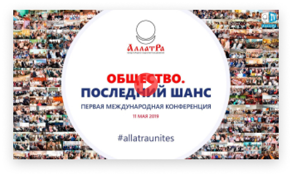

Любой человек хочет быть счастливым. Но можем ли мы назвать счастливым наше общество? Каждый из нас наверняка хотел бы жить в мире, в котором действительно счастлив он, его семья и все люди.
Но каким мы видим мир сегодня?
Реалии современности: военные угрозы и конфликты, геополитическая напряжённость, миллионы беженцев, умирающие от голода дети, экономические кризисы — и это всё на фоне стремительно нарастающих климатических катастроф, которые ставят человечество перед ключевым выбором между выживанием или гибелью цивилизации.
И это всё результат потребительского формата общества. О таком ли мире мы с вами мечтаем? Разве такое будущее мы хотим для наших детей и внуков? Разве это тот мир, в котором мы сами хотим жить?
Но у человечества есть шанс
Уникальное событие мирового масштаба «ОБЩЕСТВО. ПОСЛЕДНИЙ ШАНС» 9 мая 2020 на платформе Международного общественного движения «АЛЛАТРА» объединит в одном онлайн-телемосте людей из 180 стран мира в открытом глобальном диалоге:
«Хотим ли мы созидательное общество?»
присоединитьсяВ этом всемирном событии во вторую субботу мая 2020 года примут участие сотни тысяч людей, включая дипломатов, лидеров различных международных и некоммерческих организаций, политиков, учёных, представителей СМИ, культуры и социально активных людей из разных стран. Интерактивная видеотрансляция в режиме реального времени с синхронным переводом на разные языки мира позволит вести живой диалог между людьми разных континентов.
На этой исторической международной видеоконференции тысячи людей со всего мира будут иметь возможность объединиться и поделиться своим мнением и видением того, каким должно быть будущее нашего общества.
Событие 9 мая 2020 года — следующий шаг после первой всемирной конференции «ОБЩЕСТВО. ПОСЛЕДНИЙ ШАНС», состоявшейся 11 мая 2019 года. На ней люди озвучили наиболее острые вопросы современности и правду, которая всколыхнула мир.
Люди поняли: для того чтобы в мире действительно произошли изменения к лучшему, необходимо изменить сам формат мирового общества с потребительского на созидательный и изменить мирным путём. И это могут сделать только сами люди. Сегодня нам как человечеству так важно видеть то общее будущее, к которому мы хотим прийти как единая общечеловеческая семья.
Результатом международной конференции 11 мая стала мощная волна по всему миру в виде последующих международных конференций и телемостов, многочисленных круглых столов, интервью со специалистами из разных сфер, масштабных социальных видеоопросов на тему: «Нужно ли нам созидательное общество и каким мы его видим?».
Активная деятельность людей по всему миру показала на практике, что мы все можем объединиться в общей созидательной цели, если не будем перекладывать ответственность на кого-то и начнём вместе созидать на благо всего мирового сообщества.
Созидательные изменения начинаются с решения людей, и это решение становится началом будущего!
Масштабный телемост 9 мая 2020 года организуют сами люди своими силами в своих странах и регионах!
Присоединяйтесь!
Международная конференция «ОБЩЕСТВО. ПОСЛЕДНИЙ ШАНС» 9 мая 2020.
Объединяй и созидай!
Мы бы уже сегодня жили в созидательном обществе, если бы вчера начали действовать. А вчера начали бы действовать, если бы позавчера начали о нём говорить.
/И.М. Данилов/